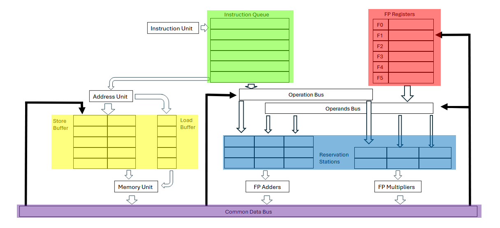

Introduction
This text is a compilation of the notes I've taken while studying computer architecture. I intended to write about some aspects of Tomasulo's algorithm that aren't clear
to other students like me using the RISC-V architecture.
Description of Tomasulo's Algorithm
- Allows out-of-order execution. It avoids RAW hazards waiting for the operands while executing other instructions.
- Avoids WAR and WAW hazards through register renaming.
- Hardware loop unrolling.
- No need for special compilers.
Parts of the Tomasulo's Machine
First, let's start reviewing the parts of a Tomasulo machine. Note that this example uses floating point, but it can be used with other types of data.

- The Instruction Queue, where instructions are issued in order, one each cycle, in green.
- The Reservation Stations where operations are waiting to be executed in blue.
Each RE holds the operation to be performed, the operands, and a busy bit:
- The Floating Point Registers in red, RISC-V has 32, but 5 will suffice for this example.
Each register has a field that indicates which Reservation Station holds the value that should be written to said register.
- The memory Load and Store Buffers, which hold the operations waiting for memory, in yellow.
- The Common Data Bus where FP and memory results are broadcast wherever they're needed, in violet.
Stages of a Tomasulo's Machine
- Issue:
Gets the next instruction from the Instruction Queue.
If there is a Reservation Station empty, the operation is sent there, otherwise stall.
Copies the values of operands to the Reservation Station (register renaming), eliminating WAR/WAW hazzards.
If there are missing operands, wait for them to be broadcast through the Common Data Bus.
- Execute:
The operation in a Reservation Station waits until it has all operands.
When it's ready, the operation is sent to the corresponding functional unit.
- Write Result:.
Write the result of the instruction to the Common Data Bus and then to registers and pending Reservation Stations.
Examples of the Tomasulo's Algorithm
The following example was taken from this video.
*UNCLEAR ASPECTS
*no instruction is allowed to initiate execution until a branch that precedes the instruction in program order has completed.
This restriction guarantees that an instruction that causes an exception during
execution really would have been executed.
*WAW example
*REGISTER RENAMING